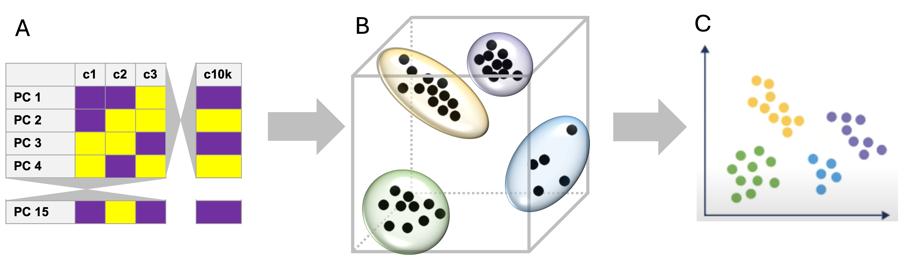
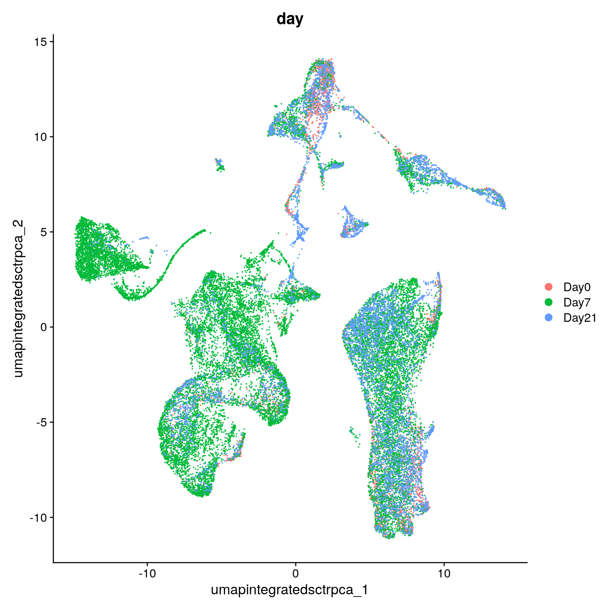
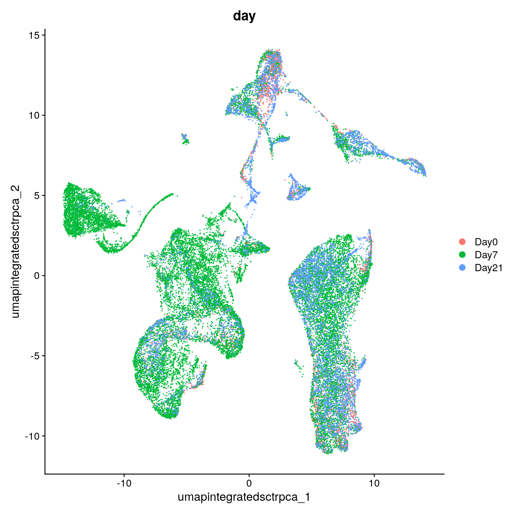

Workflow Overview

Introduction
One of our goals in a single-cell analysis is to generate clusters
that reasonably approximate cell-types or sub-types of interest in our
samples before determining if there are differences in the proportions
of these populations or differences in gene expression within these
populations between experimental conditions.
|

|
A. The prior step used the filtered, normalized counts as input to a
prinicpal component analysis. The top principle components (PCs) are the
input to the clustering step.
B. Cells are plotted in a
high-dimensional space (where the num dimesnions = num of included PCs,
e.g. 15 dimensions); cells with similar gene expression profiles are
closer to each other and are clustered together.
C. The cells
clusters are projected from the high-dimensional space (e.g. 15
dimensions) down to two-dimensional space for visualization.
|
In this section, we will demonstrate how to generate clusters using
Seurat’s graph based clustering approach and visualize those clustering
assignments via a lower-dimensional projection of the full dataset.
Like other steps in our analysis, multiple parameters may need to be
tested and evaluated while we would expect that only the final would be
reported. Clustering is considered part of data exploration so an
iterative approach is reasonable, and often expected (source).
Objectives
- Understand the clustering process and input parameters
- Generate initial clusters using ``
- Visualize our clustering results
Clustering and projection
Now that we selected a number of PCs that we think are likely to
represent biological variation and integrated our data across
samples/batches, our next task is clustering.
An important aspect of parameter selection for clustering is to
understand the “resolution” of the underlying biology and your
experimental design:
- Is answering your biological question dependent on identifying rarer
cell types or specific subtypes?
- Or are broader cell-types more relevant to address your biological
question?
The OSCA book has a helpful
analogy comparing clustering to microscopy and points out that
“asking for an unqualified ‘best’ clustering is akin to asking for the
best magnification on a microscope without any context”.
To generate clusters, we will generate “communities” of cells using
the PCs we selected, before choosing a resolution parameter to divide
those communities into discrete clusters.
Clustering
Seurat uses a graph-based clustering approach to assign cells to
clusters using a distance metric based on the previously generated PCs,
with improvements based on work by (Xu
and Su 2015) and CyTOF data (Levine et
al. 2015) implemented in Seurat v3 and v5 and building on the
initial strategies for droplet-based single-cell technology (Macosko et
al. 2015) (source).
A key aspect of this process is that while the clusters are based on
similarity of expression between the cells, the clustering is based on
the selected PCs and not the full data set.

Image: kNN example - section on graph based
clustering (from Cambridge Bioinformatics course)
To briefly summarize, cells are embedded in a k-nearest neighbors
(kNN) graph (illustrated above) based on “the euclidean distance in PCA
space” between the cells and the edge weights between any two cells
(e.g. their “closeness”) is refined based on Jaccard similarity (source).
Additional context and sources for graph-based clustering
Cambridge
Bioinformatics’ Analysis of single cell RNA-seq data course
materials, the source of the image above, delves into kNN and other
graph based clustering methods in much greater detail, including
outlining possible downsides for these methods. To described kNN, we
have also drawn from the Ho
Lab’s description of this process for Seurat v3 as well as the HBC
materials on clustering and the OSCA
book’s more general overview of graph based clustering, which also
describes the drawbacks for these methods.
This process is performed with the FindNeighbors() command,
using the number of principal components we selected in the previous
section.
The second step is to iteratively partition the kNN graph into
“cliques” or clusters using the Louvain modularity optimization
algorithm (for the default parameters), with the “granularity” of the
clusters set by a resolution parameter (source).

Image: K-means clustering example (from
Cambridge Bioinformatics course)
We’ll use the FindClusters() function,
selecting a resolution of 0.4 to start, although we could
also add other resolutions at this stage to look at in later steps. See
Waltman
and Jan van Eck (2013) for the underlying algorithms.
Again, how a “cell type” or “subtype” should be defined for your data
is important to consider in selecting a resolution - we’d start with a
higher resolution for smaller/more rare clusters and a lower resolution
for larger/more general clusters.
Then, when we look at the meta data we should see that cluster labels
have been added for each cell:
# Code block - clustering steps
# Create KNN graph with `FindNeighbors()`
geo_so = FindNeighbors(geo_so, dims = 1:pcs, reduction = 'integrated.sct.rpca')
# generate clusters
geo_so = FindClusters(geo_so, resolution = 0.4, cluster.name = 'integrated.sct.rpca.clusters')
Modularity Optimizer version 1.3.0 by Ludo Waltman and Nees Jan van Eck
Number of nodes: 31560
Number of edges: 1032683
Running Louvain algorithm...
Maximum modularity in 10 random starts: 0.9451
Number of communities: 20
<<<<<<< Updated upstream
Elapsed time: 6 seconds
=======
Elapsed time: 4 seconds
>>>>>>> Stashed changes
# look at meta.data to see cluster labels
head(geo_so@meta.data)
orig.ident nCount_RNA nFeature_RNA
HODay0replicate1_AAACCTGAGAGAACAG-1 HO.Day0.replicate1 10234 3226
HODay0replicate1_AAACCTGGTCATGCAT-1 HO.Day0.replicate1 3158 1499
HODay0replicate1_AAACCTGTCAGAGCTT-1 HO.Day0.replicate1 13464 4102
HODay0replicate1_AAACGGGAGAGACTTA-1 HO.Day0.replicate1 577 346
HODay0replicate1_AAACGGGAGGCCCGTT-1 HO.Day0.replicate1 1189 629
HODay0replicate1_AAACGGGCAACTGGCC-1 HO.Day0.replicate1 7726 2602
day replicate percent.mt nCount_SCT
HODay0replicate1_AAACCTGAGAGAACAG-1 Day0 replicate1 1.240962 6061
HODay0replicate1_AAACCTGGTCATGCAT-1 Day0 replicate1 7.536415 4609
HODay0replicate1_AAACCTGTCAGAGCTT-1 Day0 replicate1 3.112002 5319
HODay0replicate1_AAACGGGAGAGACTTA-1 Day0 replicate1 1.559792 3880
HODay0replicate1_AAACGGGAGGCCCGTT-1 Day0 replicate1 3.700589 4186
HODay0replicate1_AAACGGGCAACTGGCC-1 Day0 replicate1 2.938131 5855
nFeature_SCT integrated.sct.rpca.clusters
HODay0replicate1_AAACCTGAGAGAACAG-1 2867 1
HODay0replicate1_AAACCTGGTCATGCAT-1 1509 1
HODay0replicate1_AAACCTGTCAGAGCTT-1 2386 1
HODay0replicate1_AAACGGGAGAGACTTA-1 1032 9
HODay0replicate1_AAACGGGAGGCCCGTT-1 915 0
HODay0replicate1_AAACGGGCAACTGGCC-1 2587 1
seurat_clusters
HODay0replicate1_AAACCTGAGAGAACAG-1 1
HODay0replicate1_AAACCTGGTCATGCAT-1 1
HODay0replicate1_AAACCTGTCAGAGCTT-1 1
HODay0replicate1_AAACGGGAGAGACTTA-1 9
HODay0replicate1_AAACGGGAGGCCCGTT-1 0
HODay0replicate1_AAACGGGCAACTGGCC-1 1
Generally it’s preferable to err on the side of too many clusters, as
they can be combined manually in later steps. In our experience, this is
another parameter that often needs to be iteratively revised and
reviewed.
Resolution parameter recommendations
The Seurat
clustering tutorial recommends selecting a resolution between 0.4 -
1.2 for datasets of approximately 3k cells, while the HBC
course recommends 0.4-1.4 for 3k-5k cells. However, in our
experience reasonable starting resolutions can be very dataset
dependent.
Cluster plots
To visualize the cell clusters, we can use dimensionality reduction
techniques to visualize and explore our large, high-dimensional dataset.
Two popular methods that are supported by Seurat are t-distributed
stochastic neighbor embedding (t-SNE) and Uniform Manifold Approximation
and Projection (UMAP) techniques. These techniques allow us to visualize
our high-dimensional single-cell data in 2D space and see if cells
grouped together within graph-based clusters co-localize in these
representations (source).
While we unfortunately don’t have time to compare and contrast tSNE,
and UMAP, we would highly recommend this blog post
contrasting tSNE and UMAP for illustrative examples. The Seurat
authors additionally caution that while these methods are useful for
data exploration, to avoid drawing biological conclusions solely based
on these visualizations (source).
To start this process, we’ll use the RunUMAP() function to
calculate the UMAP reduction for our data. Notice how the previous
dimensionality choices carry through the downstream analysis and that
the number of PCs selected in the previous steps are included as an
argument.
# Code block - create UMAP reduction
geo_so = RunUMAP(geo_so, dims = 1:pcs, reduction = 'integrated.sct.rpca', reduction.name = 'umap.integrated.sct.rpca')
geo_so # Notice a third reduction has been added: `umap.integrated.sct.rpca`
An object of class Seurat
46955 features across 31560 samples within 2 assays
Active assay: SCT (20466 features, 3000 variable features)
3 layers present: counts, data, scale.data
1 other assay present: RNA
3 dimensional reductions calculated: unintegrated.sct.pca, integrated.sct.rpca, umap.integrated.sct.rpca
Visualizing and evaluating clustering
After we generate the UMAP reduction, we can then visualize the
results using the DimPlot() function,
labeling our plot by the auto generated seurat_clusters
that correspond to the most recent clustering results generated.
At this stage, we want to determine if the clusters look fairly well
separated, if they seem to correspond to how cells are grouped in the
UMAP, and if the number of clusters is generally aligned with the
resolution of our biological question. Again, if there are “too many”
clusters that’s not necessarily a problem.
We can also look at the same UMAP labeled by day to
visually inspect if the UMAP structure corresponds to the
day.
# Code block - UMAP cluster visualization
# cluster ID labels
post_integration_umap_plot_clusters = DimPlot(geo_so, group.by = 'seurat_clusters', label = TRUE, reduction = 'umap.integrated.sct.rpca') + NoLegend()
post_integration_umap_plot_clusters
ggsave(filename = 'results/figures/umap_integrated_sct_clusters.png', plot = post_integration_umap_plot_clusters, width = 6, height = 6, units = 'in')
# clusters with labels, split by condition
post_integration_umap_plot_split_clusters = DimPlot(geo_so, group.by = 'seurat_clusters', split.by = 'day', label = TRUE, reduction = 'umap.integrated.sct.rpca') + NoLegend()
post_integration_umap_plot_split_clusters
ggsave(filename = 'results/figures/umap_integrated_sct_split_clusters.png', plot = post_integration_umap_plot_clusters, width = 14, height = 6, units = 'in')
# UMAP with day labels (note - we added this column to the meta-data yesterday)
post_integration_umap_plot_day = DimPlot(geo_so, group.by = 'day', label = FALSE, reduction = 'umap.integrated.sct.rpca')
post_integration_umap_plot_day
ggsave(filename = 'results/figures/umap_integrated_sct_day.png', plot = post_integration_umap_plot_day, width = 8, height = 6, units = 'in')
 

Similar to the PCA plots, the day labeled UMAP can tell
us if technical sources of variation might be driving or stratifying the
clusters, which would suggest that the normalization and integration
steps should be revisted before proceeding.
Another approach is to evaluate the number of cells per cluster using
the table() function, split by day or split by
orig.ident to see if the individual samples are driving any
of the UMAP structure:
# Code block - cell count tables
# cells per cluster, split by condition
table(geo_so@meta.data$day, geo_so@meta.data$integrated.sct.rpca.clusters)
0 1 2 3 4 5 6 7 8 9 10 11 12 13
Day0 131 1176 923 54 68 23 166 169 108 105 265 56 42 136
Day7 3903 2161 668 2314 2032 2263 1593 924 555 526 393 627 660 403
Day21 1581 1458 898 110 242 34 461 142 454 363 211 104 65 158
14 15 16 17 18 19
Day0 3 0 151 137 132 30
Day7 608 621 301 96 87 120
Day21 35 2 42 258 190 22
# cells per cluster per sample
table(geo_so@meta.data$orig.ident, geo_so@meta.data$integrated.sct.rpca.clusters)
0 1 2 3 4 5 6 7 8 9 10
HO.Day0.replicate1 37 338 234 22 23 8 51 57 23 24 70
HO.Day0.replicate2 19 152 182 7 9 8 30 28 24 20 51
HO.Day0.replicate3 46 423 273 8 22 2 49 51 31 30 73
HO.Day0.replicate4 29 263 234 17 14 5 36 33 30 31 71
HO.Day7.replicate1 613 558 242 794 507 819 368 256 106 0 28
HO.Day7.replicate2 1331 458 149 524 528 477 462 214 165 0 277
HO.Day7.replicate3 1092 831 182 555 522 607 408 301 187 0 72
HO.Day7.replicate4 867 314 95 441 475 360 355 153 97 526 16
HO.Day21.replicate1 418 477 263 37 63 12 141 40 133 103 65
HO.Day21.replicate2 213 250 221 13 47 6 83 31 67 72 30
HO.Day21.replicate3 223 223 190 18 49 4 94 26 75 65 32
HO.Day21.replicate4 727 508 224 42 83 12 143 45 179 123 84
11 12 13 14 15 16 17 18 19
HO.Day0.replicate1 17 11 23 2 0 48 22 33 10
HO.Day0.replicate2 8 8 30 1 0 12 24 13 3
HO.Day0.replicate3 16 12 38 0 0 52 41 52 3
HO.Day0.replicate4 15 11 45 0 0 39 50 34 14
HO.Day7.replicate1 172 206 93 0 272 70 41 28 42
HO.Day7.replicate2 187 165 123 0 126 89 18 13 18
HO.Day7.replicate3 176 163 155 0 160 99 26 36 54
HO.Day7.replicate4 92 126 32 608 63 43 11 10 6
HO.Day21.replicate1 37 14 49 13 0 14 65 57 3
HO.Day21.replicate2 16 14 26 4 0 5 53 28 7
HO.Day21.replicate3 15 18 36 3 0 9 54 38 6
HO.Day21.replicate4 36 19 47 15 2 14 86 67 6
Comparing to unintegrated data
If we had proceeded with our filtered data and only normalized our
data without doing any integration, including through the dimensionality
reduction and clustering steps and then labeled the cells with their
sample of origin, then we would see the following for our data:
Modularity Optimizer version 1.3.0 by Ludo Waltman and Nees Jan van Eck
Number of nodes: 31560
Number of edges: 998753
Running Louvain algorithm...
<<<<<<< Updated upstream
Maximum modularity in 10 random starts: 0.9374
Number of communities: 17
Elapsed time: 5 seconds
=======
Maximum modularity in 10 random starts: 0.9506
Number of communities: 22
Elapsed time: 4 seconds
>>>>>>> Stashed changes

In the plot at left, we see that while there are distinct clusters,
those clusters seem to stratified by day. This suggests that without
integration, these batch effects could skew the biological variability
in our data. While on the right, we see little stratification within our
clusters which means the integration seems to have removed those batch
effects.
Rewind: Pre-integration evaluation clustering and visualization
(code)
Prior to integration, we could follow the same steps we’ve just run
for the integrated to see if the resulting clusters tend to be
determined by sample or condition (in this case, the day):
geo_so = FindNeighbors(geo_so, dims = 1:pcs, assay = 'RNA', reduction = 'unintegrated.sct.pca', graph.name = c('RNA_nn', 'RNA_snn'))
geo_so = FindClusters(geo_so, resolution = 0.4, graph.name = 'RNA_snn', cluster.name = 'unintegrated.sct.clusters')
geo_so = RunUMAP(geo_so, dims = 1:pcs, reduction = 'unintegrated.sct.pca', reduction.name = 'umap.unintegrated.sct.pca')
The plots above were generated with:
# Code block - show unintegrated
pre_integration_umap_plot_orig.ident = DimPlot(geo_so, group.by = 'orig.ident', label = FALSE, reduction = 'umap.unintegrated.sct.pca')
ggsave(filename = 'results/figures/umap_unintegrated_sct_orig.ident.png', plot = pre_integration_umap_plot_orig.ident, width = 8, height = 6, units = 'in')
pre_integration_umap_plot_day = DimPlot(geo_so, group.by = 'day', label = FALSE, reduction = 'umap.unintegrated.sct.pca')
ggsave(filename = 'results/figures/umap_unintegrated_sct_day.png', plot = pre_integration_umap_plot_day, width = 8, height = 6, units = 'in')
Alternative clustering resolutions
While we show a single resolution, we can generate and plot multiple
resolutions iteratively and compare between them before selecting a
clustering result for the next steps:
resolutions = c(0.4, 0.8)
for(res in resolutions) {
message(res)
cluster_column = sprintf('SCT_snn_res.%s', res)
umap_file = sprintf('results/figures/umap_integrated_sct_%s.png', res)
geo_so = FindClusters(geo_so, resolution = res)
DimPlot(geo_so, group.by = cluster_column, label = TRUE, reduction = 'umap.integrated.sct.rpca') + NoLegend()
ggsave(filename = umap_file, width = 8, height = 7, units = 'in')
}
In the results, we’ll see multiple resolutions should now be added to
the metadata slot.
head(geo_so@meta.data)
Save our progress
Before moving on to our next section, we will output our updated
Seurat object to file:
saveRDS(geo_so, file = 'results/rdata/geo_so_sct_clustered.rds')
Summary
In this section we:
- Generated cluster assignments for our cells using
FindNeighbors() and FindClusters()
- Evaluated our initial clusters using
RunUMAP
dimensional reduction and visualization
Next steps: Marker genes
These materials have been adapted and extended from materials listed
above. These are open access materials distributed under the terms of
the Creative
Commons Attribution license (CC BY 4.0), which permits unrestricted
use, distribution, and reproduction in any medium, provided the original
author and source are credited.
